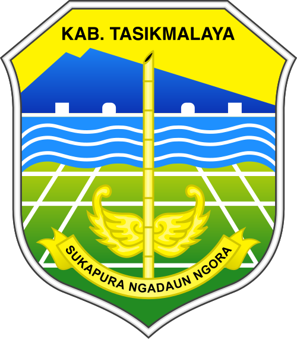

Integrasi Poligon Google Maps dengan Data Penduduk & SLS Tingkat RT
Kecamatan Jatiwaras, Kabupaten Tasikmalaya
Berbatasan dengan Desa Sukakerta / Desa Janggala
Berbatasan dengan Desa Kertarahayu / Desa Jatiwaras
Berbatasan dengan Desa Sukaraja / Sungai Ciwulan
Berbatasan dengan Desa Neglasari / Desa Setiawangi